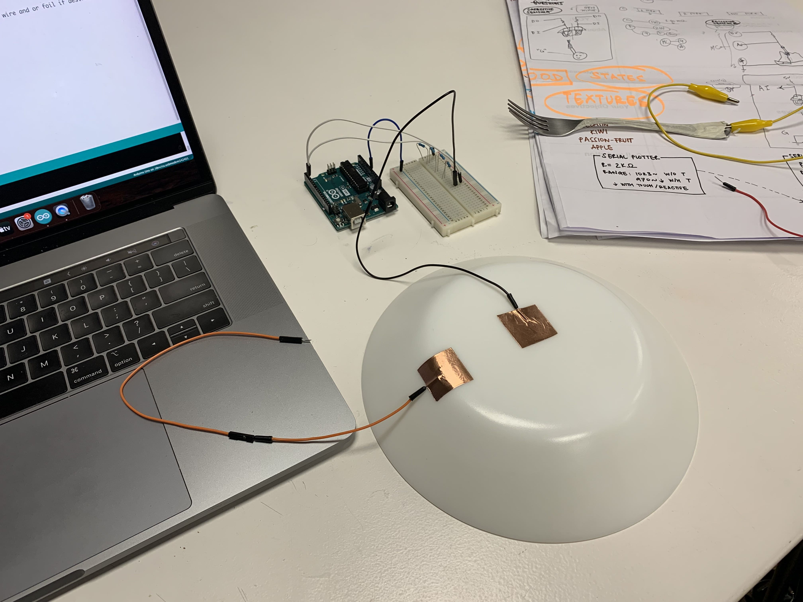

In the seventh week, I was intrigued with the idea of 'Edible electronics' and conductivity + capacitance in food. To explore the same I turned food with different moisture contents and measured their capacitance to turn them into buttons or triggers. A circuit was devised using terminals made of copper tape and various kinds of resistors. The interactivity was graphed using a Serial Plotter on the Arduino IDE. The code was programmed using the C++ language.

Fig. 7.1 The process picture of the setup for tests and the video documenting reactivity (left to right)
I was really interested in using the dinner plate as an interface to trigger responses in a sensorial experiment/setting. I tried this further briefly in the Design Dialogues II event, alongside a poster that talked about on of my experiments exploring Food versus Machine Learning called Fishy Conversations.